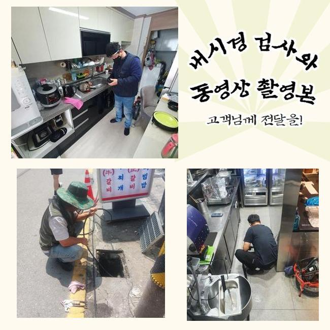
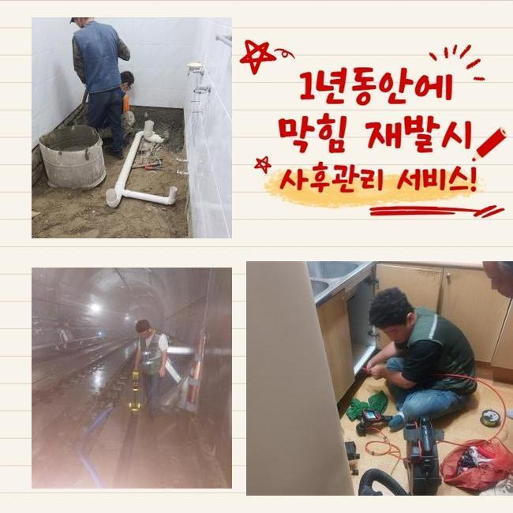
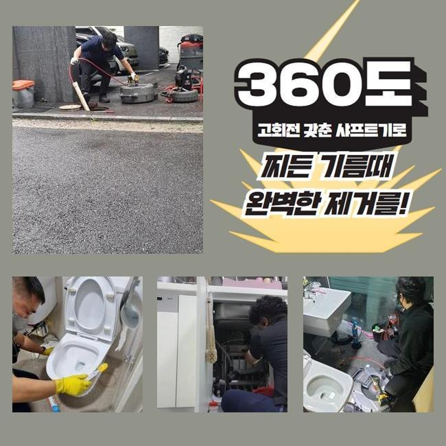
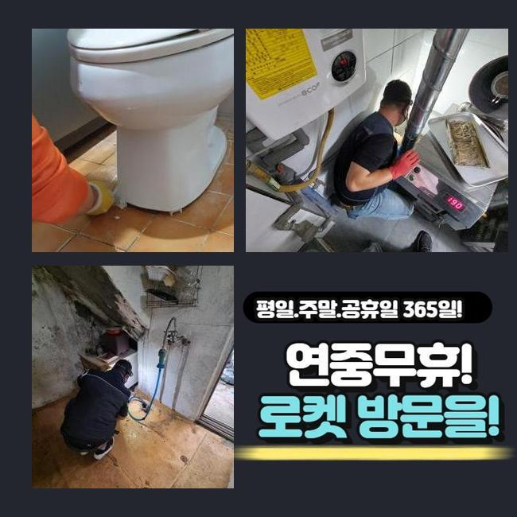
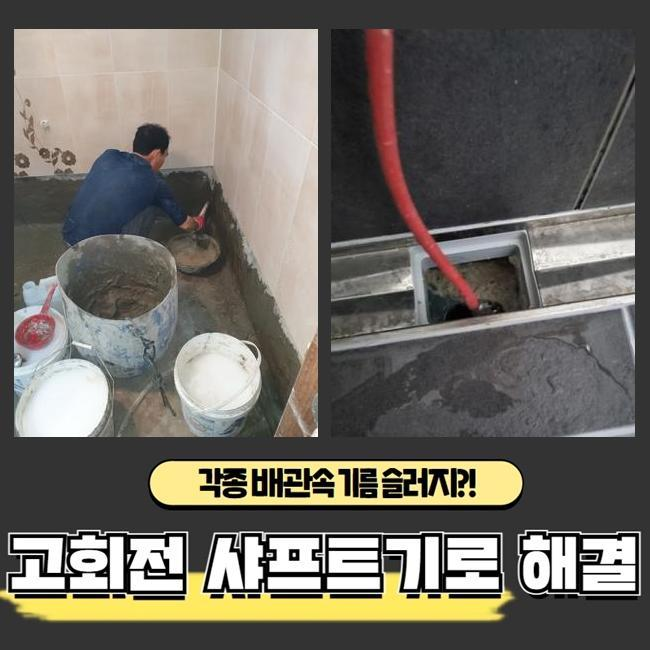
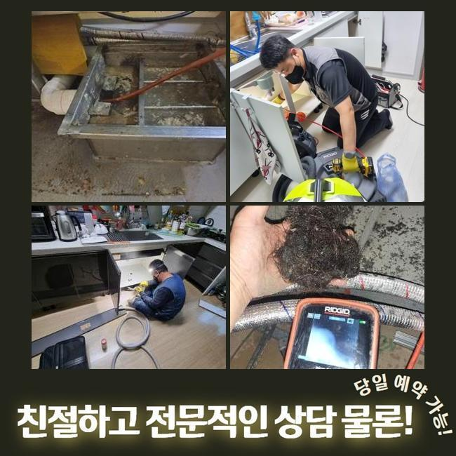
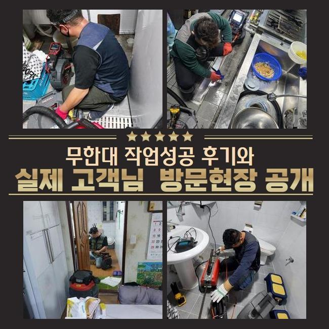

🏠 장현동씽크대배수구역류 광석동 하수관고압세척 수리업체
용인 싱크대막힘 전문 시공 후기

📋 작업 개요
- 위치: 용인
- 서비스 유형: 싱크대막힘, 하수구막힘, 배관막힘, 역류해결, 뚫는업체, 배관청소, 고압세척, 배관보수, 악취차단
- 작업 일시: 2024. 12. 26. 17:16
- 업체명: 하수구수사대 (010-5615-2118)
🔍 문제 상황
장현동씽크대배수구역류 광석동 하수관고압세척 수리업체
상업적인 건물 내부에서 하수의 범람이 벌어졌다는 이야기를 듣고 깔끔하게 보수를 해드리려고 해당 장소에 찾아갔습니다
규모가 꽤 되는 건물이면 내부 장소마다 설치된 수로가 하나로 수렴하는 모습을 갖추고 있는 상황이 많은 편입니다
많은 관로 중 하나에서 문제점이 생겼다면 다른 곳까지 중단돼서 여러명이 설비결함에 따른 불편함을 감당해야 할 수 있습니다
이번 시공을 했던 곳은 많은 영업장들이 있는 상가였는데 하루 아침에 하수관 기능이 마비되다보니 손님들을 받지 못해서 불편감과 동시에 경제적 곤란까지 첩첩산중이라고 느끼셨다고 합니다
이렇게 거대한 건물에서 하수구 장애가 반복적으로 유발될 시에는 건물 이용자들에게 심각한 고충을 야기할 수 있다보니 의뢰받는 즉시로 고객님을 찾아뵙고 있습니다
도착 후에는 손상이 가장 심한 곳부터 찾아가서 물이 내려가는지 확인해보는데요
배수 테스트를 설명드리자면 물을 수압이 강하게 내린 다음 배수구 방향으로 물이 나가는 스피드를 측정하여 막힘 정도를 파악합니다
수돗물이 줄어드는 속도가 현저히 슬로우모션이 걸린 듯 느렸으며 아예 막힘이 마비되는 순간이 일어난다는 사실을 몸소 깨닫게 되었습니다
여러곳에서 하수막힘 문제가 일어난 것은 관로 내부 통로에 수많은 고착물들이 부착되어 있을 가능성이 높다는 뜻입니다

🔎 원인 분석
💡 전문가 진단: 정밀 진단 장비를 사용하여 슬러지의 고착 여부를 판명하고 타격/세척 작업을 실시했습니다.
부피가 점점 불어났을 오물들을 모두 소멸시키는데 실패한다면 기하급수적으로 피해가 전염되듯 퍼져나가므로 빠르게 움직여야 했습니다
하수구 고장의 주범을 꼽자면 물이 나가는 통로를 메꿔버린 찌꺼기가 유력하므로 다 체크해서 삭제시켜야만 통로가 나옵니다
생활 중에 물을 쓰다보면 어느정도의 찌꺼기들은 형성되는데 물과 혼합된 채 옥외로 향하는 과정마다 한 파트에 접착돼서 심각한 장애물으로 전락합니다
정말 폐기의 목적으로 쓰레기를 내버리는 게 아니라도 일반 하수에 섞인 미량의 석회나 미네랄이 딱딱하게 굳곤 합니다
관로 내측을 관찰해보니 털이나 섬유조직과 흙 등등 물살에 딸려간 이상물질들이 한껏 엉켜있었습니다
조금씩 부피를 불려나가다가 장기화되면서 틈도 없이 붙어버리면 쉽게 제거되지 않을 수 있습니다
이동하려는 물을 붙든다면 고이다가 더러운 물의 역행까지 피할 길이 없을 상태까지도 악화될 수 있습니다
이물질은 물과 닿으면 더 빠르게 썩어나갈 조건을 다 갖추게 되며 이런 찌꺼기가 방출하는 쿰쿰한 냄새가 떠다녀서 더 큰 불편함이 생기기도 해요
물기와 항상 맞닿아있는 파이프 속은 내내 습하기에 위생도 더 나빠지는데다 하수구냄새까지 만듭니다
침전물이 붙은 장소가 복합적일 수 있으므로 총 문제점들을 발본색원해줘야 합니다
하나의 막힘이라면 석션장치만 가동시키더라도 뚫는 게 가능할 수 있는데요

🔧 작업 과정
배관 자체가 독특한 형상이거나 관로가 복잡하게 이어져있다면 흐름을 봉인하는 포인트들이 많이 생성되어 있을 수 있습니다
그러므로 작업 전에는 관로 모양과 내부 오염물질의 규모를 관찰하여 인식해야 합니다
아무리 물을 쏘아대더라도 통수가 다시 나오지 않으면 오물이 너무 커졌다거나 고착물질이 됐을 수 있습니다
쉽게 풀리지 않는 막힘을 철저히 고치고 넘어가려한다면 통수를 끊기게 한 대상을 표적하여 그 자리에서 떼내야 합니다
이물질의 부피와 같은 실제 모습을 잘 알아야 시공 절차를 설정할 수 있습니다
배관에 특화된 카메라 장치는 어둑하고 칙칙한 관로를 모니터로 내부를 비춰주는 장비인데 오물이 누적된 지점과 말라붙은 오염원의 특징을 파악할 수 있게 합니다
시공 중에 카메라를 써서 모니터링을 하면 청소가 또다른 장애는 없는지 중간 체크를 해주기 때문에 하수구 안을 더 맑게 만들 수 있습니다
청소에 앞서서 배관의 컨디션을 우선 점검할 때와 마무리에 작업의 퀄리티를 다시금 체크하기 위한 용도로 카메라를 쓰고 있습니다
관로를 따라 곳곳을 확인해보니 물길이 모이게 되는 메인배관 포함 넓은 범주에 걸쳐서 오물이 딱 달라붙어있는 것을 직접 관측할 수 있었는데요
실내배관이라면 전동모터의 파워를 갖춘 전동스프링이나 플렉스샤프트를 접목해서 이물질을 긁고 잘라내서 막힘을 소강시킬 수 있겠습니다
옥외 시설물이나 연결 부위에 긴 관로를 따라서 노폐물들이 덕지덕지 붙어버렸다면 드라마틱한 차이점을 마주하는 건 힘듭니다
광활한 배수로이므로 달라붙은 미네랄 석회물질도 많이 통과하다보니 소박한 석션으로는 외부배관은 턱도 없을 수 있습니다
커다란 배수로를 청소할 때는 고압의 물줄기를 분사하는 배관 고압세척장치를 쓰는 방향을 고려해야 합니다
고압의 물을 쏘는 기기로 배관의 들어가기 쉬운 크기의 노즐을 장착하여 물을 발사하는 원리이며 견고화가 이뤄진 오물까지 싹 제거됩니다
공간에 있는 배관들은 노후됐다면 더 약해지므로 작업의 올바른 방식에 대해 여러 단서를 보고 정하고 작업해요
모든 하수구 청소에 들어가기 전 배관의 상세 컨디션도 꼼꼼히 숙지를 해주고 하수구의 세정업무를 시행해요
장소마다 강도 조절을 하면서 마치 마라톤하듯 배관 청소를 임하면서 통수장애를 만들 정도로 통로를 차단하는 중이었던 침전물들을 남김 없이 덜어낼 수 있었어요


✅ 작업 완료
파이프에 돌아다니던 조각들도 잔여량이 없는지를 알아보고 나면 기능을 원상복구 시켰다고 말씀드려도 됩니다
하수가 잘 방출되는지 통수테스트를 거쳐보고 관리법에 대한 질문을 하시더라도 답해드리고 사용법도 알려드립니다
마감 정리가 잘됐나 보고 통수가 되돌아왔는지 더블체크를 놓치지 않습니다
여러 기능의 장치들을 복합적으로 쓰며 높은 만족도를 얻으시도록 하수구 설비에 생긴 곤란함을 능숙하게 해결해 나갑니다
하수시설에 연관된 필요하신 게 있으시다면 시간 상관없이 연락 부탁드립니다!




⚠️ 주방 싱크대 배관 막힘 예방 수칙
- ✅ 기름기가 묻은 식기나 프라이팬은 설거지 전 키친타올로 반드시 기름때를 닦아내세요.
- ✅ 주기적으로 싱크대 개수대에 뜨거운 물을 가득 받아 한 번에 내려 배관 내부 기름을 씻어내세요.
- ✅ 배수구 거름망을 미세한 필터로 사용하시고 음식물 찌꺼기가 틈으로 새어 들지 않게 관리하세요.
- ✅ 베이킹소다와 식초를 뜨거운 물과 함께 일주일에 한 번씩 부어주면 배관 살균과 막힘 예방에 좋습니다.
💡 핵심 정리
- 확실한 장비 작업(내시경 점검 및 샤프트 스케일링)으로 원인을 뿌리 뽑습니다.
- 작업 후 1년 이내에 동일한 부위 재발 시 100% 무상 A/S 서비스를 보장합니다.
- 서울 · 경기 · 인천 전 지역에 24시간 언제든 긴급 출동할 수 있도록 항시 대기 중입니다.
❓ 자주 묻는 질문 (FAQ)
🚨 용인 싱크대막힘 문제로 고민이신가요?
정확한 원인 진단과 확실한 시공으로 재발 없는 해결을 약속드립니다.
24시간 긴급 출동 | 서울 · 경기 · 인천 전지역 | 1년 내 재발 시 무상 A/S